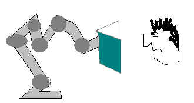
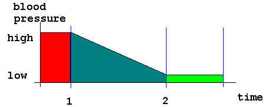

WELCOME SIR
Since then, however, there have been many structural improvements.
The laboratory was converted to electrons in the year 1999, and tHus remains.
All breakages must be paid for. There's some expensive test tubes here you know.
Rhombic Research
Other Pathways
BBC Science/Tech News
The BBC are apparently quite popular in the British Island. Mostly in
english.
New
Scientist
Whilst not as advanced as ourselves, there is some
research here that
demands attention.
BREAKING NEWS
Reading slowly can reduce stress!
We, here just in time, can now reveal the stark relief of our work. Shodow!! How is that?
We have been working very closely with the Department of Cognitive Barrel Mile Luminence
Partial Teflon Spore (D.A.P.P.E.R.G.R.E.Y.S.U.I.T.) in the area with the Whistle Posse.
Our conclusions, far and away outweigh the several millions of input dollars yes! and are
thus:
Reading slowly is very good for blood pressure, since there is a direct connection between
the eyes and the brain, which regulates the other things. As an example, read the
following
paragraph, taken from the mystical text entitled "The Legend of Biradel". Do not
move your
eyes - our experiment has been set up to move the text for you. See which one you prefer!
The Rhombic Laboratory has been working closely with the Foward Motor Company to use spare
robots as book shifters. Using a similar technique, these machines move the book in
front of the reader's eyes at a leisurely pace thus reducing the subject's blood pressure
and almost completely removing the incredible energy exersion mostly associated with
Reading. The diagram below shows this.

The New Forward Motor Company / Rhombic Laboratory Reading Robot Prototype.

The robot was introduced "hello" at point 1. The graph proves that the new robot reduces blood pressure.
We performed a controlled experiment and introduced one of these new reading robots at 1 oclock. By 2 oclock, the subject - our very own Ludwig who is known for jitters was reading in a very relaxed way. His blood pressure had indeed dropped!!
The robots are very slow due to the number of joints being far in excess of that necessary for normal operation. As a result they become very inefficient, but perfect for this application.
We will be publishing many famous titles such as Shakespeare and the argos catalogue in slow versions. They will be available from our electronic shop soon enough.
ALERT! There is a danger with slow books. If you select a book that is to lengthy, such as war and peace or chicken licken, there is the distinct possibility that you will not live for long enough to ever reach the end. Just in case, we suggest you buy the book as well and read the last chapter first to alleviate any unneccesary anxiety.
I hope this helps
Doctor Glide Merton Vindicate
Department of Universally Duplicated Quench Handshake
Masscow